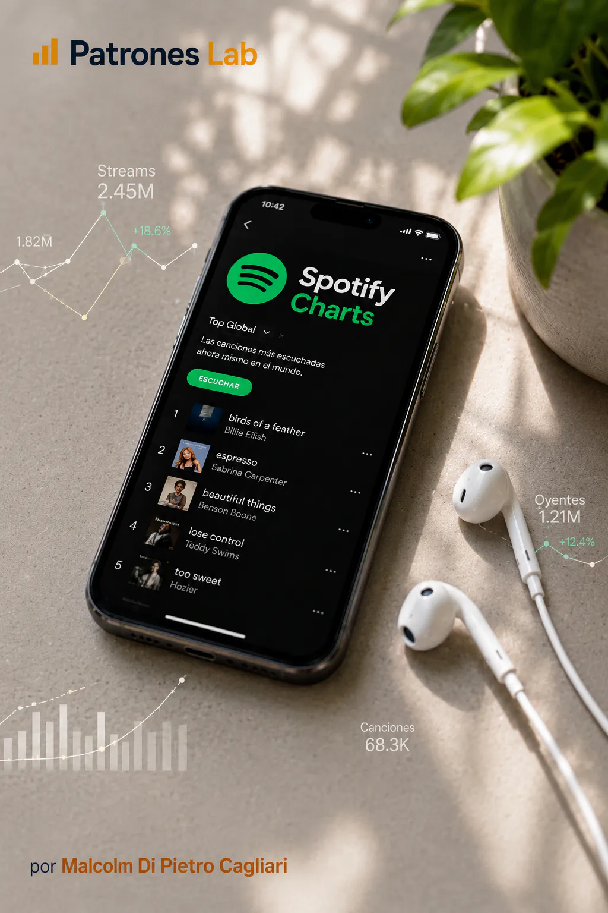
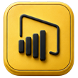

BUSINESS INTELLIGENCE · PROJETO 14

Projeto 13 · Dashboard Power BI
Dashboard em Power BI · Spotify Charts
Análise dos rankings musicais de Spotify Charts com dados públicos de músicas, artistas, álbuns e mercados, orientada a explorar streams, presença nos charts, liderança temporal e distribuição territorial através de um dashboard interativo em Power BI.

CONTEXTO E OBJETIVO
Construir um dashboard analítico em Power BI a partir de dados públicos de Spotify Charts, integrando músicas, artistas, álbuns, datas e mercados para compreender como se distribui a presença musical em diferentes charts.
O projeto procura analisar que músicas concentram maior volume de streams, que artistas mantêm presença nos rankings, como muda a liderança ao longo do tempo e que mercados explicam maior atividade dentro do dataset.
MODELO E DESENVOLVIMENTO
- Utilização de dados públicos de Spotify Charts como fonte principal para analisar rankings diários de músicas, rankings diários de artistas e rankings semanais de álbuns.
- Preparação de um modelo de dados com tabelas de factos, dimensões e relações orientadas à análise em Power BI, separando músicas, artistas, álbuns, países, datas e informação de apoio visual.
- Construção de indicadores para medir streams totais, presenças nos charts, melhores posições, entradas no Top 10, presença por mercado, concentração de músicas líderes e evolução temporal dos rankings.
- Exploração de padrões de consumo musical através de visualizações interativas e filtros por período, país, grupo de mercado, artista e música.
ESTADO ATUAL E PRÓXIMOS PASSOS
O desenvolvimento atual liga preparação de dados, modelação relacional e visualização em Power BI para construir uma leitura clara dos rankings musicais do Spotify.
O resultado esperado é um dashboard interativo orientado a portefólio, com estética escura, leitura executiva e gráficos focados em detetar concentração, liderança, presença territorial e evolução dos charts.